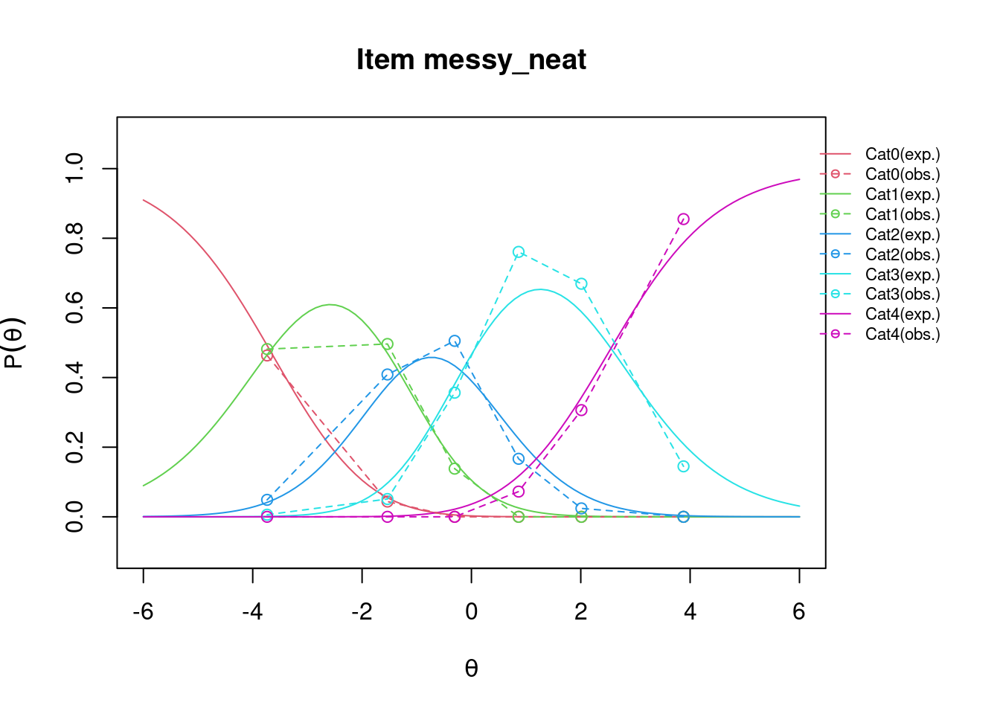
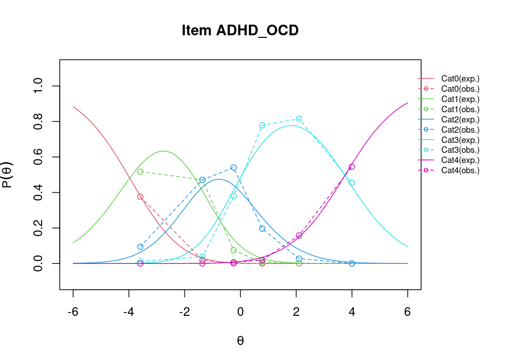
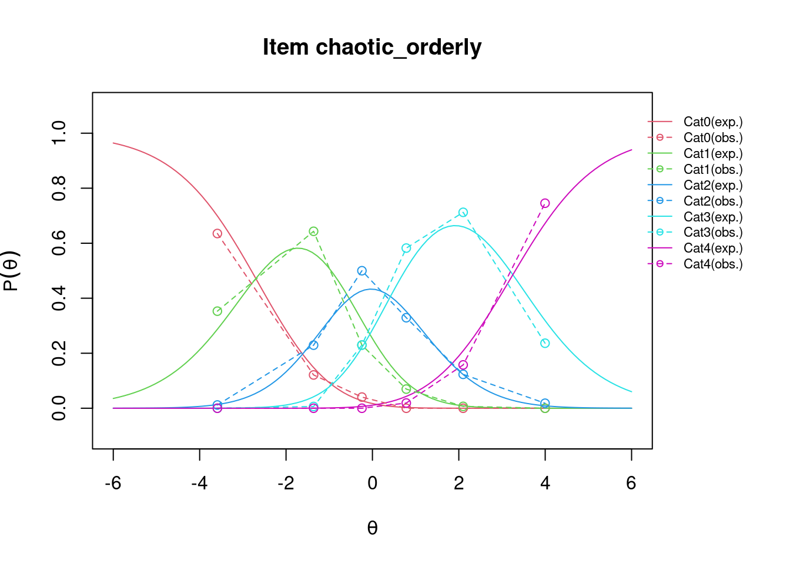
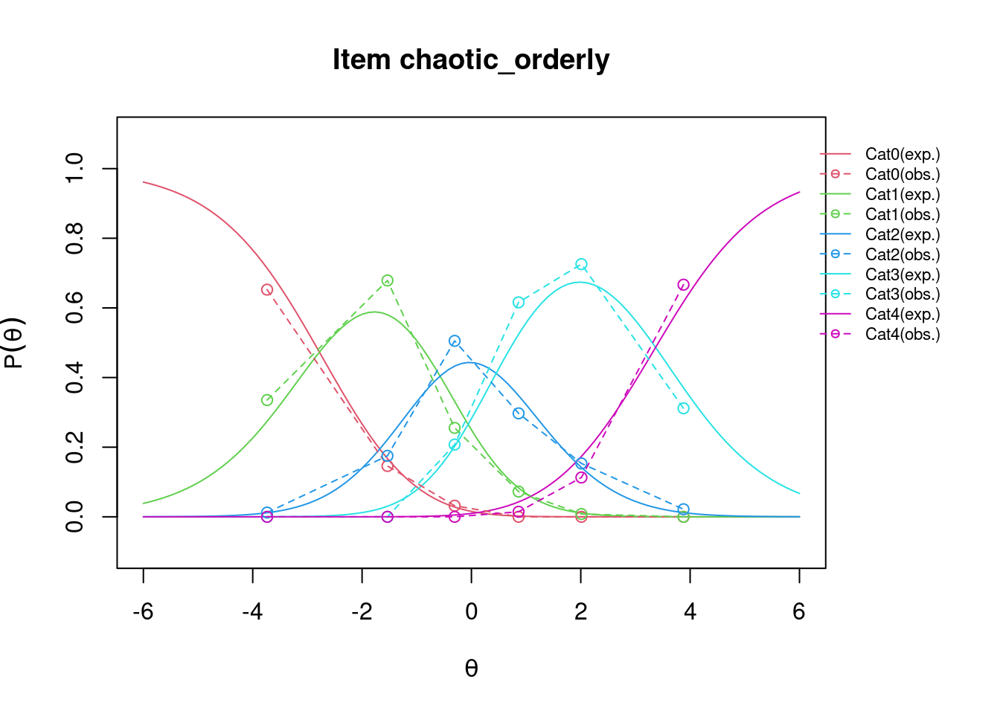
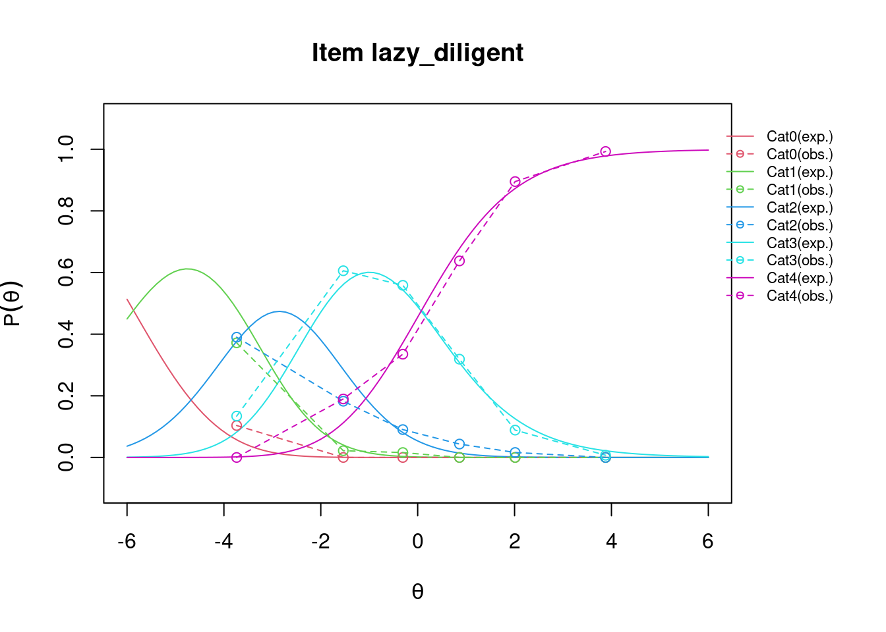
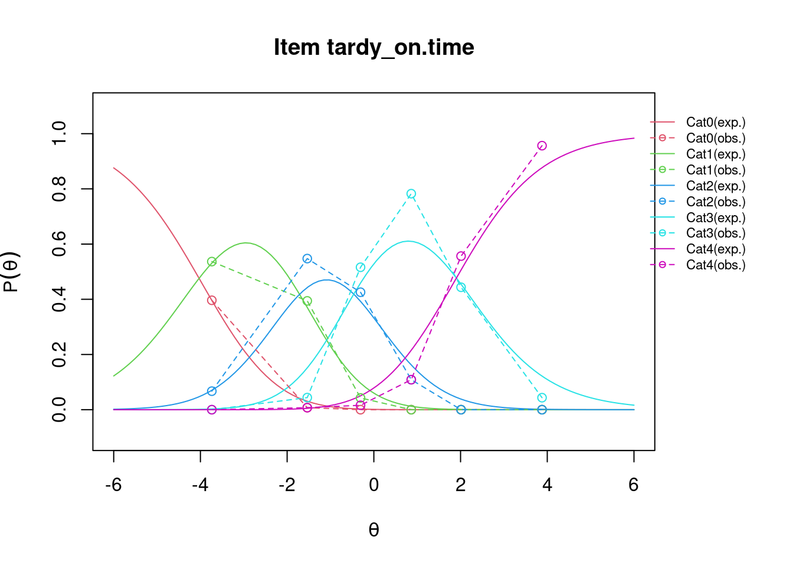
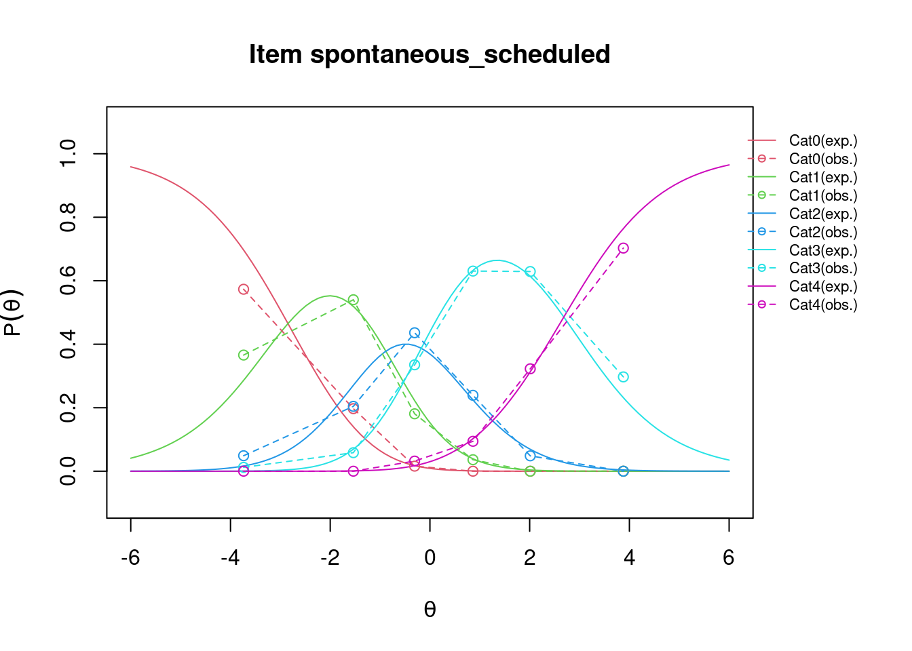
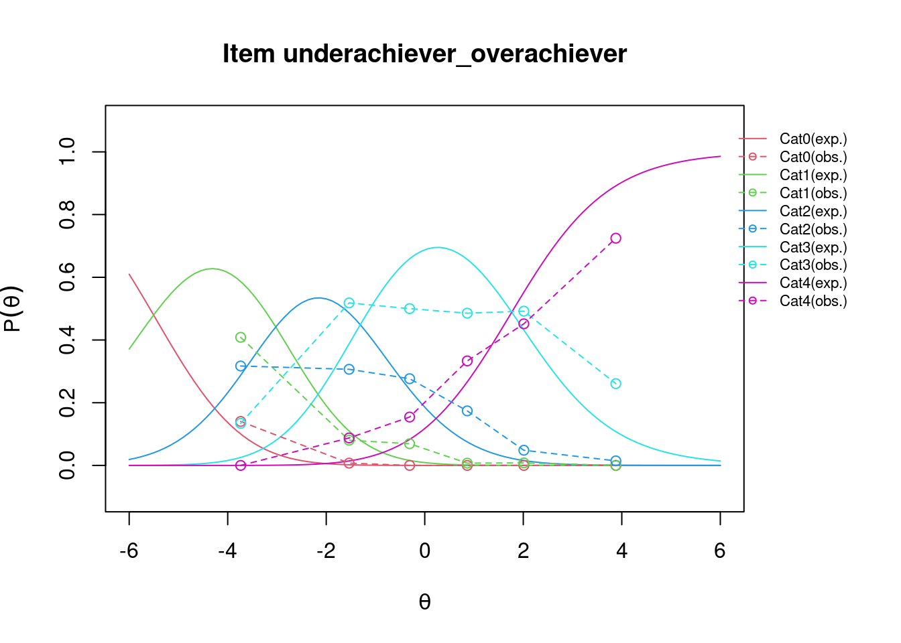

Partial Credit Model
Übung
0.1 Die Daten
- Kontinuierliche Skala in Likert Skala umgewandelt (nicht optimal, Infos gehen verloren)
- Wir können jetzt auch nicht wirklich sagen, was die verschiedenen Kategorien aussagen (außer 1 und 5).
Foto von Ilse Orsel auf Unsplash
1 Daten laden und umkodieren
2 PCM Modell fitten: TAM
## Alle kategorien wurden genutzt
# alpha(psych_dat)$response.freq
pcm_psych <- tam.mml(psych_dat, irtmodel = "PCM", verbose = FALSE)
rsm_psych <- tam.mml(psych_dat, irtmodel = "RSM", verbose = FALSE)
table(psych_dat$messy_neat)
0 1 2 3 4
82 173 185 283 166 summary(pcm_psych)------------------------------------------------------------
TAM 4.2-21 (2024-02-19 18:52:08)
R version 4.4.1 (2024-06-14) x86_64, linux-gnu | nodename=fv-az569-105 | login=unknown
Date of Analysis: 2024-10-23 14:00:31.584409
Time difference of 0.1785214 secs
Computation time: 0.1785214
Multidimensional Item Response Model in TAM
IRT Model: PCM
Call:
tam.mml(resp = psych_dat, irtmodel = "PCM", verbose = FALSE)
------------------------------------------------------------
Number of iterations = 86
Numeric integration with 21 integration points
Deviance = 14854.94
Log likelihood = -7427.47
Number of persons = 889
Number of persons used = 889
Number of items = 8
Number of estimated parameters = 33
Item threshold parameters = 32
Item slope parameters = 0
Regression parameters = 0
Variance/covariance parameters = 1
AIC = 14921 | penalty=66 | AIC=-2*LL + 2*p
AIC3 = 14954 | penalty=99 | AIC3=-2*LL + 3*p
BIC = 15079 | penalty=224.07 | BIC=-2*LL + log(n)*p
aBIC = 14974 | penalty=119.12 | aBIC=-2*LL + log((n-2)/24)*p (adjusted BIC)
CAIC = 15112 | penalty=257.07 | CAIC=-2*LL + [log(n)+1]*p (consistent AIC)
AICc = 14924 | penalty=68.62 | AICc=-2*LL + 2*p + 2*p*(p+1)/(n-p-1) (bias corrected AIC)
GHP = 1.049 | GHP=( -LL + p ) / (#Persons * #Items) (Gilula-Haberman log penalty)
------------------------------------------------------------
EAP Reliability
[1] 0.944
------------------------------------------------------------
Covariances and Variances
[,1]
[1,] 6.082
------------------------------------------------------------
Correlations and Standard Deviations (in the diagonal)
[,1]
[1,] 2.466
------------------------------------------------------------
Regression Coefficients
[,1]
[1,] 0
------------------------------------------------------------
Item Parameters -A*Xsi
item N M xsi.item AXsi_.Cat1 AXsi_.Cat2
1 messy_neat 889 2.313 -0.655 -3.681 -4.996
2 disorganized_self.disciplined 889 2.593 -1.277 -3.892 -5.739
3 ADHD_OCD 889 2.250 -0.461 -4.063 -5.539
4 chaotic_orderly 889 2.000 0.117 -2.780 -3.354
5 lazy_diligent 889 3.142 -2.875 -5.867 -9.358
6 tardy_on.time 889 2.484 -1.076 -4.031 -5.744
7 spontaneous_scheduled 889 2.191 -0.305 -2.847 -3.732
8 underachiever_overachiever 889 2.783 -2.018 -5.504 -8.529
AXsi_.Cat3 AXsi_.Cat4 B.Cat1.Dim1 B.Cat2.Dim1 B.Cat3.Dim1 B.Cat4.Dim1
1 -5.172 -2.620 1 2 3 4
2 -6.497 -5.107 1 2 3 4
3 -5.707 -1.846 1 2 3 4
4 -2.901 0.468 1 2 3 4
5 -11.571 -11.499 1 2 3 4
6 -6.208 -4.303 1 2 3 4
7 -3.905 -1.221 1 2 3 4
8 -9.838 -8.072 1 2 3 4
Item Parameters Xsi
xsi se.xsi
messy_neat_Cat1 -3.681 0.161
messy_neat_Cat2 -1.315 0.115
messy_neat_Cat3 -0.177 0.104
messy_neat_Cat4 2.552 0.118
disorganized_self.disciplined_Cat1 -3.892 0.175
disorganized_self.disciplined_Cat2 -1.848 0.125
disorganized_self.disciplined_Cat3 -0.758 0.108
disorganized_self.disciplined_Cat4 1.391 0.105
ADHD_OCD_Cat1 -4.063 0.172
ADHD_OCD_Cat2 -1.475 0.115
ADHD_OCD_Cat3 -0.168 0.101
ADHD_OCD_Cat4 3.861 0.143
chaotic_orderly_Cat1 -2.780 0.134
chaotic_orderly_Cat2 -0.573 0.109
chaotic_orderly_Cat3 0.453 0.106
chaotic_orderly_Cat4 3.369 0.136
lazy_diligent_Cat1 -5.867 0.291
lazy_diligent_Cat2 -3.491 0.171
lazy_diligent_Cat3 -2.213 0.122
lazy_diligent_Cat4 0.072 0.097
tardy_on.time_Cat1 -4.031 0.176
tardy_on.time_Cat2 -1.714 0.120
tardy_on.time_Cat3 -0.463 0.105
tardy_on.time_Cat4 1.904 0.110
spontaneous_scheduled_Cat1 -2.847 0.139
spontaneous_scheduled_Cat2 -0.884 0.114
spontaneous_scheduled_Cat3 -0.174 0.106
spontaneous_scheduled_Cat4 2.685 0.121
underachiever_overachiever_Cat1 -5.504 0.254
underachiever_overachiever_Cat2 -3.025 0.146
underachiever_overachiever_Cat3 -1.309 0.106
underachiever_overachiever_Cat4 1.766 0.105
Item Parameters in IRT parameterization
item alpha beta tau.Cat1 tau.Cat2 tau.Cat3
1 messy_neat 1 -0.655 -3.026 -0.660 0.478
2 disorganized_self.disciplined 1 -1.277 -2.615 -0.571 0.519
3 ADHD_OCD 1 -0.461 -3.602 -1.014 0.293
4 chaotic_orderly 1 0.117 -2.897 -0.690 0.336
5 lazy_diligent 1 -2.875 -2.992 -0.616 0.662
6 tardy_on.time 1 -1.076 -2.955 -0.638 0.613
7 spontaneous_scheduled 1 -0.305 -2.542 -0.579 0.131
8 underachiever_overachiever 1 -2.018 -3.486 -1.007 0.709
tau.Cat4
1 3.207
2 2.667
3 4.322
4 3.252
5 2.947
6 2.980
7 2.990
8 3.784summary(rsm_psych)------------------------------------------------------------
TAM 4.2-21 (2024-02-19 18:52:08)
R version 4.4.1 (2024-06-14) x86_64, linux-gnu | nodename=fv-az569-105 | login=unknown
Date of Analysis: 2024-10-23 14:00:31.752631
Time difference of 0.1644804 secs
Computation time: 0.1644804
Multidimensional Item Response Model in TAM
IRT Model: RSM
Call:
tam.mml(resp = psych_dat, irtmodel = "RSM", verbose = FALSE)
------------------------------------------------------------
Number of iterations = 97
Numeric integration with 21 integration points
Deviance = 15052.27
Log likelihood = -7526.14
Number of persons = 889
Number of persons used = 889
Number of items = 8
Number of estimated parameters = 12
Item threshold parameters = 11
Item slope parameters = 0
Regression parameters = 0
Variance/covariance parameters = 1
AIC = 15076 | penalty=24 | AIC=-2*LL + 2*p
AIC3 = 15088 | penalty=36 | AIC3=-2*LL + 3*p
BIC = 15134 | penalty=81.48 | BIC=-2*LL + log(n)*p
aBIC = 15096 | penalty=43.32 | aBIC=-2*LL + log((n-2)/24)*p (adjusted BIC)
CAIC = 15146 | penalty=93.48 | CAIC=-2*LL + [log(n)+1]*p (consistent AIC)
AICc = 15077 | penalty=24.36 | AICc=-2*LL + 2*p + 2*p*(p+1)/(n-p-1) (bias corrected AIC)
GHP = 1.05992 | GHP=( -LL + p ) / (#Persons * #Items) (Gilula-Haberman log penalty)
------------------------------------------------------------
EAP Reliability
[1] 0.943
------------------------------------------------------------
Covariances and Variances
[,1]
[1,] 5.911
------------------------------------------------------------
Correlations and Standard Deviations (in the diagonal)
[,1]
[1,] 2.431
------------------------------------------------------------
Regression Coefficients
[,1]
[1,] 0
------------------------------------------------------------
Item Parameters -A*Xsi
item N M xsi.item AXsi_.Cat1 AXsi_.Cat2
1 messy_neat 889 2.313 -0.642 -3.576 -4.946
2 disorganized_self.disciplined 889 2.593 -1.334 -4.268 -6.331
3 ADHD_OCD 889 2.250 -0.490 -3.425 -4.644
4 chaotic_orderly 889 2.000 0.100 -2.834 -3.462
5 lazy_diligent 889 3.142 -2.894 -5.828 -9.450
6 tardy_on.time 889 2.484 -1.060 -3.994 -5.782
7 spontaneous_scheduled 889 2.191 -0.351 -3.285 -4.365
8 underachiever_overachiever 889 2.783 -1.833 -4.767 -7.329
AXsi_.Cat3 AXsi_.Cat4 B.Cat1.Dim1 B.Cat2.Dim1 B.Cat3.Dim1 B.Cat4.Dim1
1 -5.125 -2.567 1 2 3 4
2 -7.202 -5.336 1 2 3 4
3 -4.671 -1.962 1 2 3 4
4 -2.900 0.400 1 2 3 4
5 -11.881 -11.575 1 2 3 4
6 -6.379 -4.238 1 2 3 4
7 -4.253 -1.404 1 2 3 4
8 -8.699 -7.332 1 2 3 4
Item Parameters Xsi
xsi se.xsi
messy_neat -0.642 0.052
disorganized_self.disciplined -1.334 0.054
ADHD_OCD -0.490 0.052
chaotic_orderly 0.100 0.051
lazy_diligent -2.894 0.061
tardy_on.time -1.060 0.053
spontaneous_scheduled -0.351 0.052
underachiever_overachiever -1.833 0.055
Cat1 -2.934 0.033
Cat2 -0.728 0.029
Cat3 0.463 0.029
Item Parameters in IRT parameterization
item alpha beta tau.Cat1 tau.Cat2 tau.Cat3
1 messy_neat 1 -0.642 -2.934 -0.728 0.463
2 disorganized_self.disciplined 1 -1.334 -2.934 -0.728 0.463
3 ADHD_OCD 1 -0.490 -2.934 -0.728 0.463
4 chaotic_orderly 1 0.100 -2.934 -0.728 0.463
5 lazy_diligent 1 -2.894 -2.934 -0.728 0.463
6 tardy_on.time 1 -1.060 -2.934 -0.728 0.463
7 spontaneous_scheduled 1 -0.351 -2.934 -0.728 0.463
8 underachiever_overachiever 1 -1.833 -2.934 -0.728 0.463
tau.Cat4
1 3.2
2 3.2
3 3.2
4 3.2
5 3.2
6 3.2
7 3.2
8 3.2deltas <- pcm_psych$xsi
deltas <- rsm_psych$xsi
tam.fit(rsm_psych)Item fit calculation based on 40 simulations
|**********|
|----------|$itemfit
parameter Outfit Outfit_t Outfit_p
1 messy_neat 0.7969626 -4.4872364 7.215301e-06
2 disorganized_self.disciplined 0.7199595 -6.3050148 2.881664e-10
3 ADHD_OCD 0.8472980 -3.3148127 9.170455e-04
4 chaotic_orderly 0.8684366 -2.8413560 4.492214e-03
5 lazy_diligent 1.0520677 0.9582458 3.379388e-01
6 tardy_on.time 0.6668744 -7.7334423 1.046768e-14
7 spontaneous_scheduled 1.0778940 1.5773857 1.147068e-01
8 underachiever_overachiever 1.8120496 13.1023645 3.191572e-39
9 Cat1 1.3466249 17.6903448 4.976998e-70
10 Cat2 1.3481216 21.9532531 8.062097e-107
11 Cat3 1.1591356 13.8264083 1.766216e-43
Outfit_pholm Infit Infit_t Infit_p Infit_pholm
1 3.607650e-05 0.8043868 -4.308321 1.644983e-05 6.579931e-05
2 1.728998e-09 0.7622830 -5.256709 1.466565e-07 7.332823e-07
3 3.668182e-03 0.7574348 -5.452206 4.974877e-08 2.984926e-07
4 1.347664e-02 0.8888647 -2.378577 1.737959e-02 3.475918e-02
5 3.379388e-01 1.1106942 1.994997 4.604322e-02 4.604322e-02
6 7.327379e-14 0.6808313 -7.359656 1.843846e-13 1.290692e-12
7 2.294136e-01 1.1324596 2.632125 8.485261e-03 2.545578e-02
8 2.553258e-38 1.5821124 9.897218 4.280145e-23 3.424116e-22
9 4.976998e-69 1.2465425 12.918682 3.531398e-38 3.178258e-37
10 8.868307e-106 1.3765163 23.573348 7.234779e-123 7.958257e-122
11 1.589594e-42 1.2471522 20.968987 1.259167e-97 1.259167e-96
$time
[1] "2024-10-23 14:00:31 UTC" "2024-10-23 14:00:31 UTC"
$CALL
tam.fit(tamobj = rsm_psych)
attr(,"class")
[1] "tam.fit"## Plot the option characteristic curves
plot(pcm_psych,
type = "items",
export = FALSE,
package = "graphics",
observed = TRUE,
low = -6,
high = 6)Iteration in WLE/MLE estimation 1 | Maximal change 2.0719
Iteration in WLE/MLE estimation 2 | Maximal change 1.0881
Iteration in WLE/MLE estimation 3 | Maximal change 0.4399
Iteration in WLE/MLE estimation 4 | Maximal change 0.0121
Iteration in WLE/MLE estimation 5 | Maximal change 0.0023
Iteration in WLE/MLE estimation 6 | Maximal change 4e-04
Iteration in WLE/MLE estimation 7 | Maximal change 1e-04
----
WLE Reliability= 0.931 







anova(rsm_psych, pcm_psych) Model loglike Deviance Npars AIC BIC Chisq df p
1 rsm_psych -7526.135 15052.27 12 15076.27 15133.75 197.3259 21 0
2 pcm_psych -7427.472 14854.94 33 14920.94 15079.02 NA NA NADie Schnittpunkte stimmen mit unseren Schwellenparametern überein:
deltas xsi se.xsi
messy_neat -0.6416654 0.05206623
disorganized_self.disciplined -1.3340267 0.05355485
ADHD_OCD -0.4904886 0.05185524
chaotic_orderly 0.1000362 0.05139087
lazy_diligent -2.8938256 0.06069083
tardy_on.time -1.0595675 0.05285729
spontaneous_scheduled -0.3511097 0.05169447
underachiever_overachiever -1.8330228 0.05522342
Cat1 -2.9342293 0.03303001
Cat2 -0.7283382 0.02948991
Cat3 0.4627542 0.02930049tam.fit(pcm_psych)Item fit calculation based on 40 simulations
|**********|
|----------|$itemfit
parameter Outfit Outfit_t Outfit_p
1 messy_neat_Cat1 0.36028335 -9.1873350 4.026941e-20
2 messy_neat_Cat2 0.52699145 -9.7645203 1.598668e-22
3 messy_neat_Cat3 0.87974075 -3.2355406 1.214126e-03
4 messy_neat_Cat4 0.44476149 -11.2799270 1.648827e-29
5 disorganized_self.disciplined_Cat1 0.13213436 -14.3627549 8.863260e-47
6 disorganized_self.disciplined_Cat2 0.33584182 -13.8401949 1.458108e-43
7 disorganized_self.disciplined_Cat3 0.42409534 -13.0705139 4.853653e-39
8 disorganized_self.disciplined_Cat4 0.52307200 -10.8785746 1.458254e-27
9 ADHD_OCD_Cat1 0.35316392 -8.6327837 5.987659e-18
10 ADHD_OCD_Cat2 0.56303658 -8.8676599 7.469907e-19
11 ADHD_OCD_Cat3 0.86963417 -3.7468402 1.790761e-04
12 ADHD_OCD_Cat4 0.62875136 -5.1602654 2.466000e-07
13 chaotic_orderly_Cat1 0.94461001 -2.6467123 8.127846e-03
14 chaotic_orderly_Cat2 0.95756353 -2.8769526 4.015359e-03
15 chaotic_orderly_Cat3 0.77158106 -4.6094995 4.036395e-06
16 chaotic_orderly_Cat4 0.38199154 -10.9172111 9.537972e-28
17 lazy_diligent_Cat1 0.09472598 -9.7061625 2.838223e-22
18 lazy_diligent_Cat2 4.88065662 16.0394155 6.778933e-58
19 lazy_diligent_Cat3 2.14458915 12.5684787 3.147216e-36
20 lazy_diligent_Cat4 0.91900890 -1.6945475 9.016129e-02
21 tardy_on.time_Cat1 0.18090750 -12.5903194 2.387057e-36
22 tardy_on.time_Cat2 0.34519069 -14.2550887 4.167726e-46
23 tardy_on.time_Cat3 0.46781789 -12.1260687 7.685106e-34
24 tardy_on.time_Cat4 0.56701710 -9.2645328 1.959331e-20
25 spontaneous_scheduled_Cat1 0.57755134 -6.4759671 9.420660e-11
26 spontaneous_scheduled_Cat2 0.80500371 -3.7738520 1.607462e-04
27 spontaneous_scheduled_Cat3 1.59136784 6.7265111 1.737793e-11
28 spontaneous_scheduled_Cat4 1.39606673 4.1376647 3.508585e-05
29 underachiever_overachiever_Cat1 1.12279137 -0.2603519 7.945924e-01
30 underachiever_overachiever_Cat2 10.36579702 37.5397580 0.000000e+00
31 underachiever_overachiever_Cat3 3.66602790 28.4187461 1.186399e-177
32 underachiever_overachiever_Cat4 2.61171242 20.4581757 5.080389e-93
Outfit_pholm Infit Infit_t Infit_p Infit_pholm
1 6.040411e-19 0.8979795 -1.0928802 2.744464e-01 1.000000e+00
2 2.877602e-21 0.9064139 -1.6200853 1.052140e-01 1.000000e+00
3 6.070631e-03 0.8280800 -3.3166452 9.110523e-04 2.095420e-02
4 3.462536e-28 0.8735614 -2.0842367 3.713864e-02 6.684955e-01
5 2.481713e-45 0.6338272 -4.1072605 4.003795e-05 1.081025e-03
6 3.791081e-42 0.7820026 -3.5550155 3.779569e-04 9.070965e-03
7 1.213413e-37 0.7680894 -4.4125583 1.021563e-05 2.962532e-04
8 2.770684e-26 0.8445076 -3.0374003 2.386284e-03 5.249824e-02
9 7.783956e-17 0.8610492 -1.3960968 1.626853e-01 1.000000e+00
10 1.045787e-17 0.9205691 -1.3611505 1.734661e-01 1.000000e+00
11 1.125223e-03 0.8023763 -4.0115608 6.031865e-05 1.568285e-03
12 2.466000e-06 1.0485324 0.5831939 5.597628e-01 1.000000e+00
13 2.438354e-02 0.9441337 -0.7444125 4.566269e-01 1.000000e+00
14 1.606143e-02 0.8503524 -2.7495336 5.968013e-03 1.133923e-01
15 3.632755e-05 0.9906824 -0.1642385 8.695434e-01 1.000000e+00
16 1.907594e-26 0.8988143 -1.3748423 1.691803e-01 1.000000e+00
17 4.824979e-21 0.9344012 -0.3634922 7.162372e-01 1.000000e+00
18 1.965890e-56 0.8501544 -1.5213122 1.281815e-01 1.000000e+00
19 7.238598e-35 1.0833238 1.2408512 2.146607e-01 1.000000e+00
20 1.803226e-01 1.0939957 1.8388506 6.593717e-02 1.000000e+00
21 5.728936e-35 0.7189811 -2.9909112 2.781463e-03 5.664691e-02
22 1.125286e-44 0.7831416 -3.7247508 1.955083e-04 4.887707e-03
23 1.690723e-32 0.7535334 -4.8495607 1.237352e-06 3.712055e-05
24 3.134930e-19 0.7729883 -4.3019831 1.692762e-05 4.739734e-04
25 1.036273e-09 1.1218851 1.5223726 1.279157e-01 1.000000e+00
26 1.125223e-03 0.9659303 -0.5675848 5.703169e-01 1.000000e+00
27 2.085352e-10 1.0504135 0.8890105 3.739974e-01 1.000000e+00
28 2.806868e-04 1.0779008 1.1939157 2.325109e-01 1.000000e+00
29 7.945924e-01 1.0543186 0.4100557 6.817651e-01 1.000000e+00
30 0.000000e+00 1.2750017 3.0002623 2.697472e-03 5.664691e-02
31 3.677837e-176 1.4860905 7.7367945 1.019546e-14 3.262548e-13
32 1.524117e-91 1.4397778 7.1114169 1.148576e-12 3.560585e-11
$time
[1] "2024-10-23 14:00:33 UTC" "2024-10-23 14:00:33 UTC"
$CALL
tam.fit(tamobj = pcm_psych)
attr(,"class")
[1] "tam.fit"fit <- msq.itemfit(pcm_psych)$itemfit
fit item fitgroup Outfit Outfit_t Outfit_p
1 messy_neat 1 0.7989738 -4.0571572 4.967364e-05
2 disorganized_self.disciplined 2 0.6358048 -6.0283479 1.656442e-09
3 ADHD_OCD 3 0.8475712 -3.1543960 1.608307e-03
4 chaotic_orderly 4 0.8754837 -2.3997388 1.640677e-02
5 lazy_diligent 5 1.0610563 0.5498082 5.824509e-01
6 tardy_on.time 6 0.6424470 -6.9147200 4.687884e-12
7 spontaneous_scheduled 7 1.0679896 1.1941803 2.324074e-01
8 underachiever_overachiever 8 1.7459107 10.1578638 3.057010e-24
Infit Infit_t Infit_p
1 0.8052911 -4.276279 1.900433e-05
2 0.6693106 -7.431114 1.076871e-13
3 0.8372819 -3.521248 4.295209e-04
4 0.8831941 -2.482633 1.304155e-02
5 1.0866349 1.567591 1.169766e-01
6 0.6566177 -7.977888 1.488587e-15
7 1.0690820 1.372122 1.700255e-01
8 1.6326512 10.872808 1.553440e-27